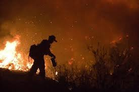
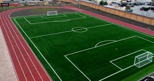

система
прошлое:
система:раньше использовался встречный пал (встречный огонь, отжиг) — способ тушения лесных пожаров, при котором пущенный навстречу огонь сжигает горючие материалы на пути основной стены огня. При этом способе тушения перед надвигающимся фронтом пожара выжигают лесную подстилку.
надсисстема: используется во время лесных пожаров
подсистема : человек ходит с огнеметом и поджигает лесной покров

настоящее :
система:
все видели беговое поле
Я собираюсь запустить по троектории беговых дорожек роботов ,которые будут ехать и gоджигать траву а позади едит робот который тушит все остатки от огня.
таким способом этот караван роботов едит по кругу и делает замкнутый круг , так как то,что один раз загорелось и потухло больше не загорится
надсистема :
в основном используется на лугах , но если придумать систему объезда,то можно в лесу:
подсистема :
робот , огнемет
будущее:
cистема:
квадрокоптер поднимается на верх стреляет лазерным кругом и опятьже огонь не выходит за пределы этого круга
надсистема:
в лесу
подсистема:
квадрокоптер,лазерная указка